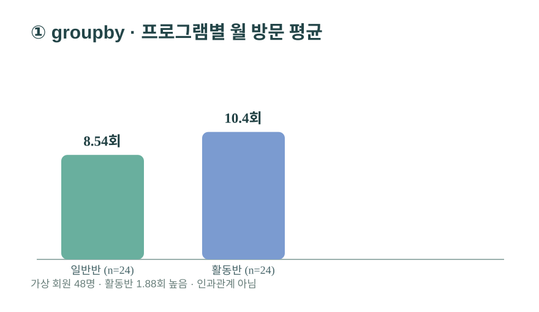
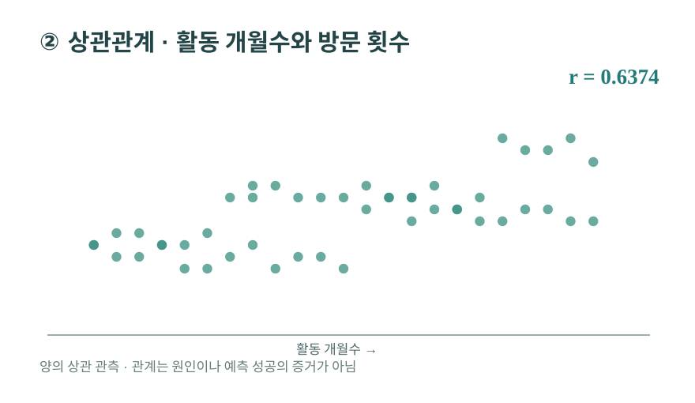
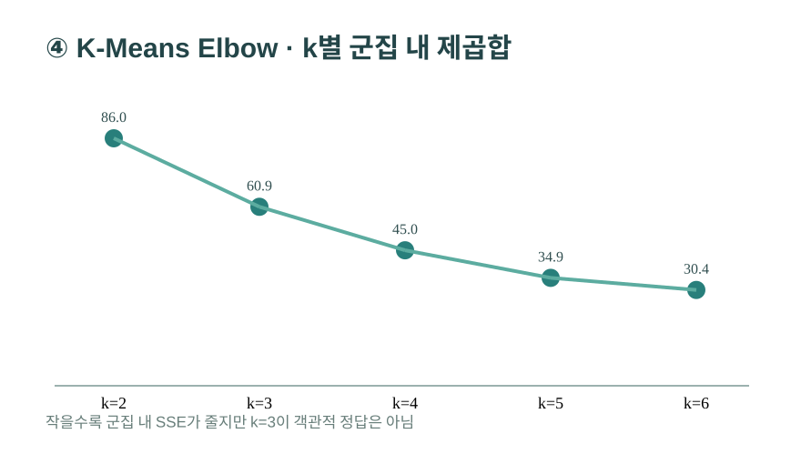
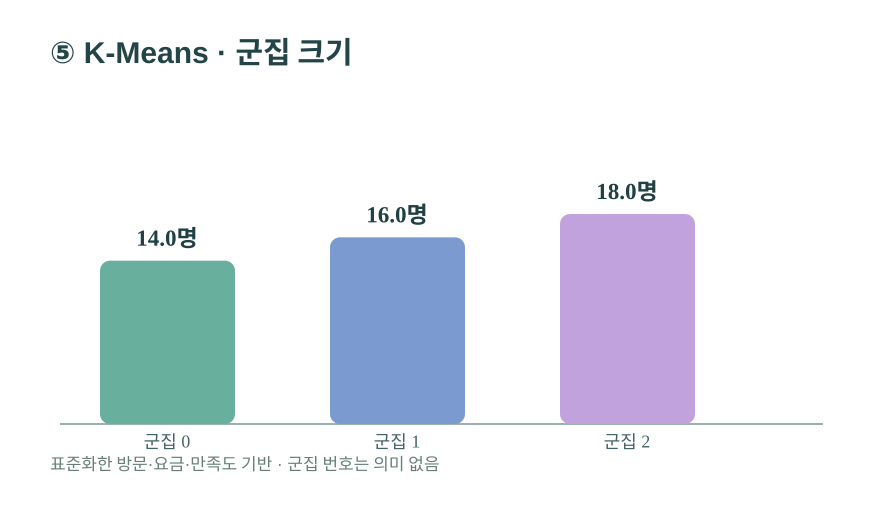
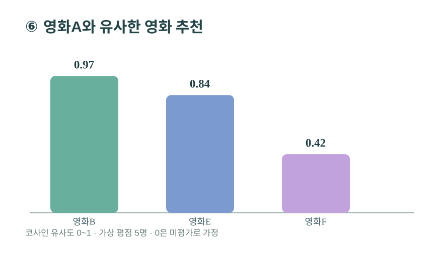

각 기법마다 데이터 처리 방식과 예제 결과를 함께 표시합니다. 회귀 성능처럼 좋지 않은 결과도 그대로 공개합니다.
01 · 10/29, 11/02DataFrame · 기술통계
질문: 회원 정보는 몇 행이고, 어떤 값이 있을까?
파일을 읽고 형태·열·결측과 평균·최솟값을 확인하는 첫 단계입니다.
df = pd.read_csv("data/sports_center_members_demo.csv")
df.head()
df.info()
df.describe()처리 결과: 50행. 중복 회원 ID 2건을 발견해 검수 대상으로 분리했습니다.
원본 일지: 10/29 DA_01 Pandas/DataFrame · 11/02 read_csv, head, info, describe
02 · 10/29, 11/02결측치 · 중복 · 이상값
질문: 비어 있거나 잘못된 값을 어떻게 다룰까?
회원 ID 중복을 제거하고 음수 방문을 오류로 처리했습니다. 실습에서는 누락값을 중앙값으로 채웠습니다.
d = df.drop_duplicates("member_id").copy()
d.loc[d.visits_per_month < 0,"visits_per_month"] = np.nan
d["visits_per_month"] = d["visits_per_month"].fillna(d["visits_per_month"].median())50 → 48명. 요금 결측 3개, 방문 오류 1개, 만족도 결측 2개를 대치했습니다.
원본 일지: 10/29 결측치 실습 · 11/02 fillna/dropna · 아래에서 처리법 비교 가능
03 · 11/02groupby · agg · merge
질문: 프로그램 A와 B의 방문 횟수는 어떻게 다를까?
회원별 표와 프로그램 설명표를 병합하고 프로그램별 평균을 계산했습니다.
d.merge(programs,on="program").groupby("program").agg({"visits_per_month":"mean"})
A 일반반 8.54회, B 활동반 10.42회. 평균 차이는 약 1.88회입니다.
원본 일지: 11/02 groupby / agg / merge · 실측 자료 아님
04 · 10/28, 11/02상관관계 corr
질문: 가입 후 활동 개월수와 월 방문수는 함께 증가할까?
두 수치형 변수의 피어슨 상관계수를 계산하고 산점도로 확인합니다.
r = d["months_active"].corr(d["visits_per_month"])

상관계수 r = 0.6374. 양의 관계가 관측되지만 원인을 입증하지는 않습니다.
원본 일지: 10/28 차이·상관 분석 · 11/02 corr
05 · 10/29~10/30Welch t-검정 · p값
질문: 두 프로그램의 방문 평균 차이는 우연일까?
독립된 A/B 두 집단의 평균을 비교했습니다. 분산이 같다고 가정하지 않는 Welch 방법을 사용했습니다.
from scipy.stats import ttest_ind
t,p = ttest_ind(group_A,group_B,equal_var=False)
t = −2.3224, p = 0.025388. 통상적인 5% 유의수준에서는 차이에 대한 통계적 증거가 있습니다. 프로그램 효과·인과관계로 해석하면 안 됩니다.
주의: 이 데이터는 사람이 만든 가상 예제입니다. p값이 작아도 실제 스포츠센터나 정책에 대한 증거가 아닙니다.
원본 일지: 10/29 DA_01 t-test / 병아리 부화장 A/B 실습 · 10/30 통계검정
06 · 10/30, 11/02선형·다중회귀 + train/test
질문: 연령·가입개월·요금·반 유형으로 방문수를 예측할 수 있을까?
36명으로 학습하고 12명으로 평가했습니다. 대치와 StandardScaler는 훈련 데이터에만 맞춰 테스트 정보 누출을 막았습니다.
train_test_split(X,y,test_size=.25,random_state=42)
make_pipeline(SimpleImputer(),StandardScaler(),LinearRegression())
테스트 MAE = 2.3875회, R² = −0.2779. 평균만 예측하는 기준보다 좋지 않아서 이 모델은 그대로 쓰기 어렵습니다.
원본 일지: 10/30 회귀 · 11/02 병아리·자동차연비·train_test_split
07 · 11/02, 11/09StandardScaler · Log 변환
질문: 방문수(회)와 요금(천 원)을 그대로 모델에 넣어도 될까?
서로 다른 단위와 범위의 변수를 모델 목적에 따라 표준화합니다. 로그축은 그래프 눈금을 바꾸고, log1p는 데이터값을 바꿉니다.
z = StandardScaler().fit_transform(train_X)
# 왜도가 큰 비음수 변수에는 np.log1p(x)도 검토
# 모델 테스트값에는 train에서 fit한 변환기만 적용
요금·방문수·만족도 3개 변수를 표준화해 K-Means에 사용했습니다. 모델에 따라 표준화 필요성이 달라집니다.
원본 일지: 11/02 StandardScaler · 11/09 Logarithmic Scale vs Standard Scale
08 · 10/30, 11/02K-Means · Elbow
질문: 이용 방식이 비슷한 회원을 몇 집단으로 묶을까?
방문수·요금·만족도를 표준화하고 k=2~6에서 군집 내 제곱합(SSE)을 계산했습니다. 시연은 k=3입니다.
z = StandardScaler().fit_transform(features)
KMeans(n_clusters=3,n_init=20,random_state=42).fit(z)


군집은 14명·16명·18명. 실루엣 점수는 0.3090으로, 군집 구분이 뚜렷하다고 보기 어렵습니다.
원본 일지: 10/30 군집 · 11/02 K-Means, Elbow · k=3은 설명용 선택
09 · 11/02 DA_03 영화추천코사인 유사도 · KNN 추천
질문: 영화A를 좋아한 사람들의 평점 패턴과 닮은 영화는?
영화 6편 × 평가자 5명의 가상 평점을 벡터로 만들고, 코사인 유사도와 NearestNeighbors로 이웃 3편을 찾았습니다. 0은 미평가를 뜻하는 예제 규칙입니다.
NearestNeighbors(n_neighbors=4,metric="cosine").fit(ratings)
similarity = 1 - cosine_distance

영화A 기준 유사도: 영화B 0.9740 → 영화E 0.8380 → 영화F 0.4174. 유사도는 선호 확률이 아닙니다.
원본 일지: 11/02 DA_03_movie_mini_example / 코사인 유사도 / KNN